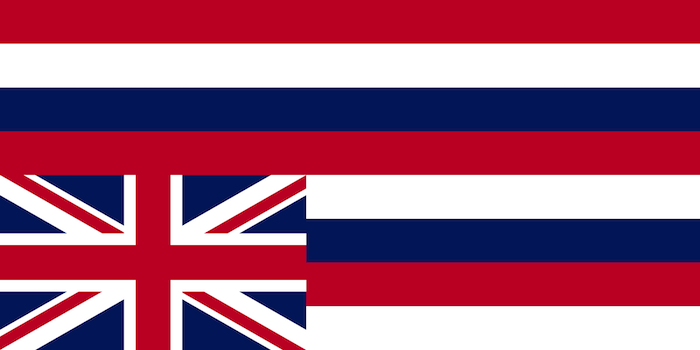

The Overthrow of 1893
A New Constitution?
On January 14th, Liliʻuokalani announced she would proclaim a new constitution, much to the dismay of her ministers, who put off even looking at her draft. Although the Nativ Hawaiians wanted a new treaty, the men were secretly on the side of the annexationists. Two of these men, Arthur Peterson and John Colburn, plotted directly with Lorrin Thurston to oppose the Queen's constitution. While Liliʻuokalani announced she would put a new constitution into effect, a signing ceremony was prepared. The Ministers repeatedly stalled for two hours, until the time came for them to sign the document, which they refused to do and left to report to Thurston. Liliʻuokalani was deeply embarrased and decided to wait for more official support, but the news had already spread: Liliʻuokalani was rebelling against the Bayonet Constitution.
Hundreds gathered in several public rallies in response to the news. Both the radical Liberal Party supporters and more conservatice National Reform Partie supporters which were both made up of almost entirely Native Hawaiians supported the Queen's efforts. However, Lorrin Thurston, a few annexationists and four of Liliʻuokalani's minsters hatched a plot to overthrow the Queen
The Committe of Safety
From the Annexation Club, thirteen members formed a Committee of Safety. The purpose of this committee was to completely overthrow the queen. While Native Hawaiians voters existed, Hawaiʻi's government would never truly be in white hands. With the promise of U.S troops to back them by John Stevens, they drafted a declaration and set their plan in motion. They would act as a false government, which would be recognized by the U.S military.
Two days after Liliuʻokalani's failed attempt to establish a new constitution, American troops arrived to protect the "public safety". While this all seems ridiculous, the U.S couldn't just barge in and immediately annex the islands. The Committee of Safety and U.S military needed to pretend that American lives were at stake, and that the Queen was out of control. Although they had previously planned this, they needed to send out letters so it would seem that the U.S invasion was not premeditated.
SIR: We, the undersigned, citizens and residents of Honolulu, respectfully represent that, in view of recent public events in this Kingdom, culminating in the revolutionary acts of Queen Liliuokalani on Saturday last, the public safety is menaced and lives and property are in peril, and we appeal to you and the United States forces at your command for assistance.
The Queen, with the aid of armed force and accompanied by threats of violence and bloodshed from those with whom she was acting, attempted to proclaim a new constitution; and while prevented for the time from accomplishing her object, declared publicly that she would only defer her action. This conduct and action was upon an occasion and under circumstances which have created general alarm and terror. We are unable to protect ourselves without aid, and, therefore, pray for the protection of the United States forces.
Citizen's Committee of Safety.
A letter from the Committee of Safety to U.S Minister John Stevens. Taken from the 1893 Blount Report
Out of the massive U.S.S. Boston, around 162 U.S Marines marched onto the Honolulu streets. They took camp at Arion Hall, a downtown building rented by Stevens just 200 yards across from ʻIolani Palace. The threat was clear: Hawaiʻi could not fight back against these forces.
The Queen Surrenders
The new "government" called themselves the Provisional Government of Hawaiʻi, and they appointed American businessman Sanford Dole as their head. Backed by well-armed U.S troops the Queen needed to make a decision. Would she let her military fight against the U.S soldiers or surrender? She decided to choose the former, but didn't completely surrender to the provisional government. In her statement, she said yielded to the United States of America, believing in due time they would see their mistake, similar to Kauʻikeoli's handling of the Paulet Affair. The means which Thurston and Stevens took over the kingdom were extremely shaky, and under U.S law, could be found illegal. Unfortunately, America was a completely different beast.
The monarchy was never restored to it's former power. Although President Glover Cleaveland could clearly see that what transpired in Hawaiʻi was wrong, the U.S Senate could not come to a decision until 1898 when Hawaiʻi was taken as a territory under the U.S.
Conclusion
What can we say that we learned from the treatment of Hawaiʻi? It's people were ravaged by foreign diseases that decimated their population. It kingdom was never allowed to be truly independent, always being meddled in by foreigners with their own motivations. It was illegally stolen through nefarious means and betrayed by foreigners that were given the same privileges that those of Native blood had. Although Hawaiʻi's monarchy may be gone, we the kanaka maoli remain. I'd like to end this page with a quote from John Kay Kamakawiwoʻole Osorio's Dismembering Lāhui.
In the end, nationhood is identity. A nation’s constitutions, laws, and elections are never more than symbols of the will of the people to think, worship, and behave as a people. We have lived long enough with the laws and rituals of others and, despite that, have survived. What might we do in a society where custom, law, and leadership reflect our own desires and aspirations? What old and new forms might we rediscover, what meaningful relationships might we recreate between humans and the earth, between the world of nature and the world of gods, without the stern remonstrations of the missionaries and the deceptive binds of their laws? How tragic it would be for us not to make the effort.
-John Kay Kamakawiwoʻole Osorio, Dismembering Lāhui: A History of the Hawaiian Nation to 1887